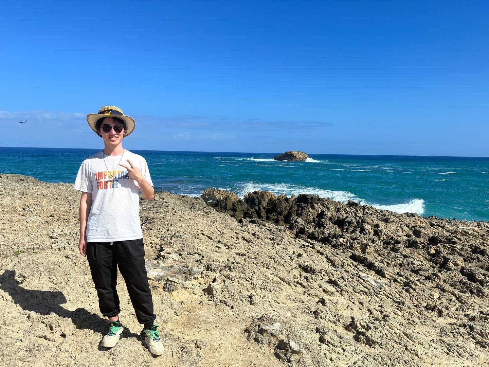
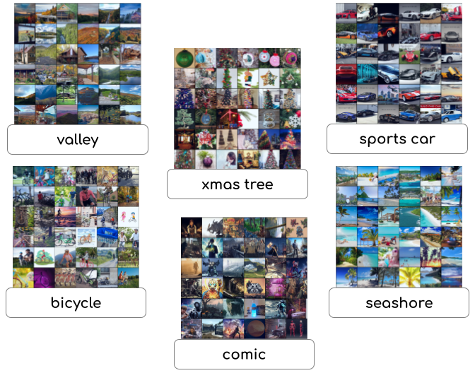
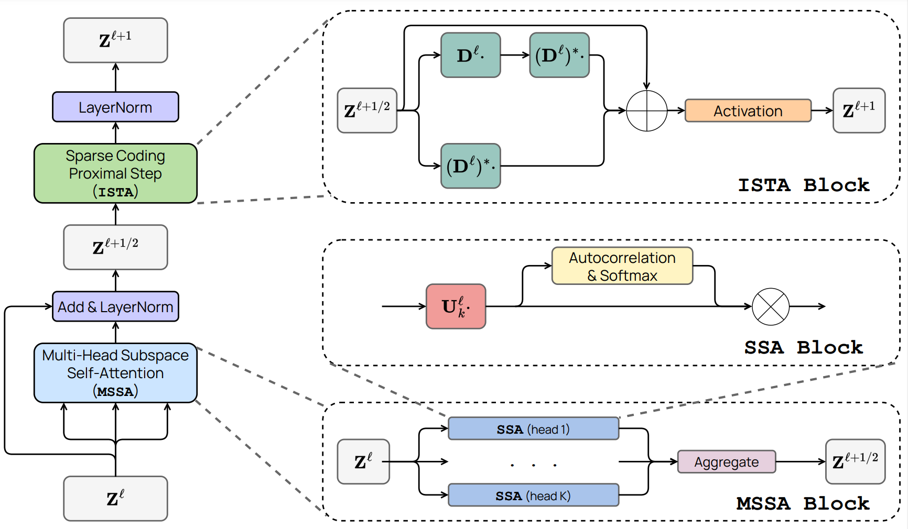

|
Tianzhe Chu
Hi, I’m Tianzhe Chu(褚天哲). I’m a junior undergraduate student major in Computer Science at ShanghaiTech University
and spent a wonderful year(22-23) in UC Berkeley.
I’m a big fan of Chopin and Rachmaninoff.
I'm from Suzhou(Soo Chow), China.
Email /
Resume /
Classes /
Github /
Music Review /
Photos(Undergoing)
|

|
|
Research
I am currently an undergraduate researcher in Berkeley Artificial Intelligence Research Lab(BAIR) advised by Prof. Yi Ma, working closely
with Tianjiao Ding from Prof. René Vidal's lab in JHU(UPenn) and Peter Tong. My
research interest lies in deep representation learning and 3D vision. More specifically,
I'm interested in unsupervised/self-supervised learning, subspace clustering, generative models(2D or 3D), 3D view synthesis(NeRFs). I also
strongly admire theory people and hope one day interpretable learning frameworks can be widely used.
Feel free to reach out to talk about research, music, cooking, etc.
|
|
News
May 2023: Gonna leave lovely Berkeley (as well as U.S.), finishing 7 tech courses and a few interesting research projects.
|
Publications & Preprints (* means equal contribution)
|

|
Image Clustering via the Principle of Rate Reduction in the Age of Pretrained Models
Tianzhe Chu*,
Shengbang Tong*,
Tianjiao Ding*,
Xili Dai,
Benjamin D. Haeffele,
René Vidal,
Yi Ma
Under Review
project page / code / arxiv
This paper proposes a novel image clustering pipeline that integrates pre-trained models and rate reduction, enhancing clustering accuracy and introducing an effective self-labeling algorithm for unlabeled datasets at scale.
|
|

|
White-Box Transformers via Sparse Rate Reduction
Yaodong Yu,
Sam Buchanan,
Druv Pai,
Tianzhe Chu,
Ziyang Wu,
Shengbang Tong,
Benjamin D. Haeffele,
Yi Ma
Under Review
code / arxiv
We develop white-box transformer-like deep network architectures which are mathematically interpretable and achieve performance very close to ViT.
|
|
{kind=link}